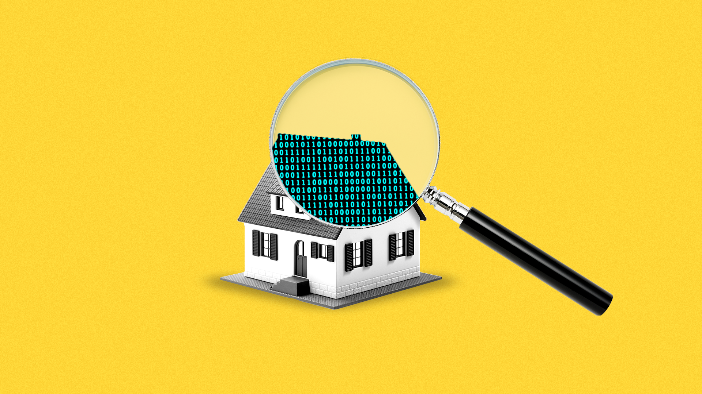

The steady erosion of privacy at home

Public spaces are under constant surveillance from AI cameras, cellphone towers and advertisers that can follow people from home to work and back again.
But life
inside the home, too, is increasingly transparent to watchful outsiders, the result of mushrooming internet-connected devices that consumers are setting up in their dens and bedrooms.
What's happening: Internet-connected devices can pick up your voice, interests, habits, TV preferences, meals, times home and away, and all sorts of other sensitive data.The gadgets send all this back to the tech companies where they were made.
The big picture: Constant surveillance at home is not yet a reality — but it's the direction we're moving in, says Jay Stanley, senior policy counsel at the ACLU.
There are still 'dumb' alternatives to nearly every internet-connected thing.You can still buy a toaster that does
not have Alexa in it, or a lightbulb that's switched on with, well, a switch.
The massive spread of these devices introduce 'enormous potential for abuse, for discrimination, and for shifts in power away from the individual and toward companies and agencies,' says Stanley.
But people are increasingly OK being watched, as long as they get something out of it.According to an Axios/Survey Monkey poll, 70% of people are comfortable living with 'smart home' devices.
What to watch: The home is still a sanctuary under the law — but the lines around it have become blurry.
Posted On: 2019-06-24T00:00:00
Posted By: Kaveh Waddell
Content Date: 2019-06-24
Download Date: 2021-05-15
Document ID: L0C04CGDT